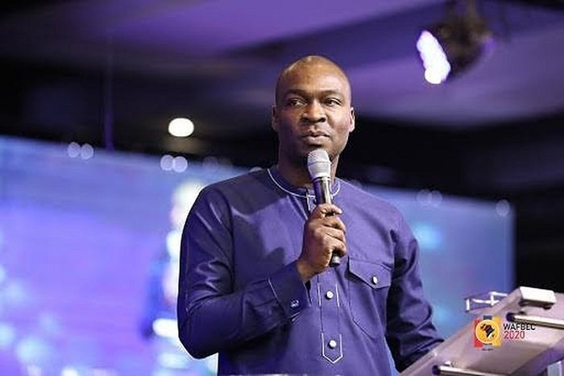

Apostle Joshua Selma Nimmak

Apostle Joshua selma Nimmak
Things you dont know about Joshua Selma
- Apostle Joshua Selma Nimmak(born 25, june 1980)
- He is a nigeria gospel minister, instrumentalist, conferance speaker, teleevangelist
- He is the founder and senior pastor of the eternity network international(ENI)
- He study chemical engineering at Ahmadu Bello University Zaria
- Apostle Joshua Selma Nimmak began his work as a minister of God as an undergraduate
- Selma began his christian ministry as a preacher to student congregation in campus alongside friends at variious gathering he got invited too
- Joshua selma was listed by Yniaja in december 2018 and april 2020 as one of the one hundred most influential christian ministry in Nigeria
"In God's economy, nothing is wasteful"
-- Apostle Joshua Selma Nimmak